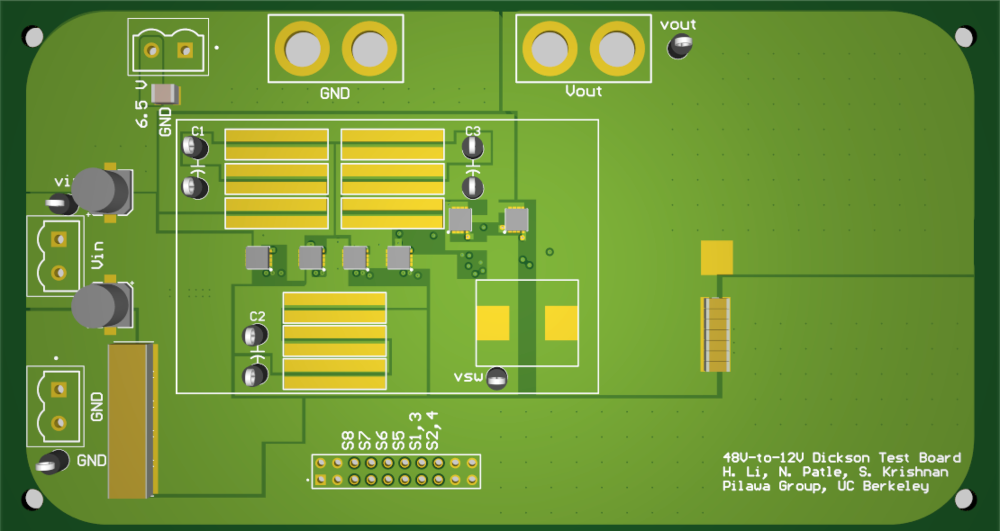
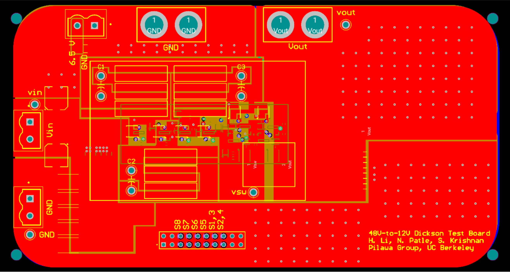
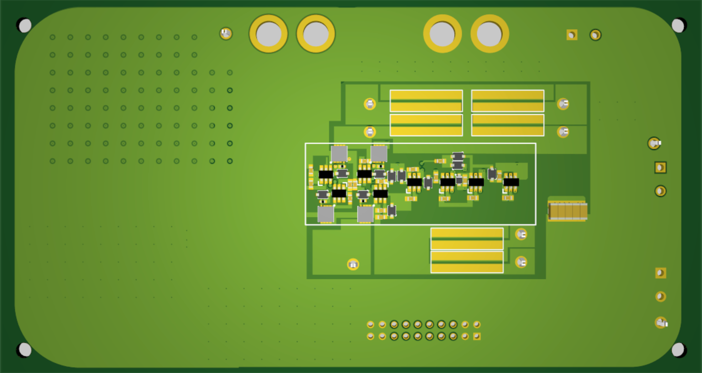
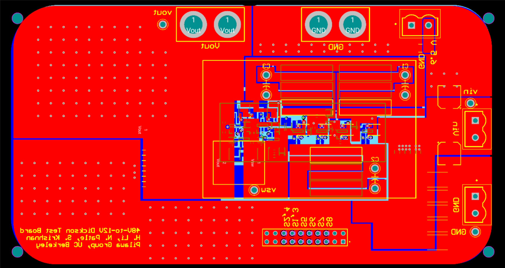

Capacitor Cubing Circuits with Application in Digitally-Controlled Oscillators(DCOs) and High-Q Filters
Analysis and Design of 48V-12V Hybrid Dickson Switched-Capacitor Converter for Split-Phase Control


Top view of the PCB


Bottom view of the PCB
A New Y-function MOSFET Mobility Extraction Method at Cryogenic Temperatures
Extracted NMOS and PMOS effective mobility vs. VG from 300K to
4K